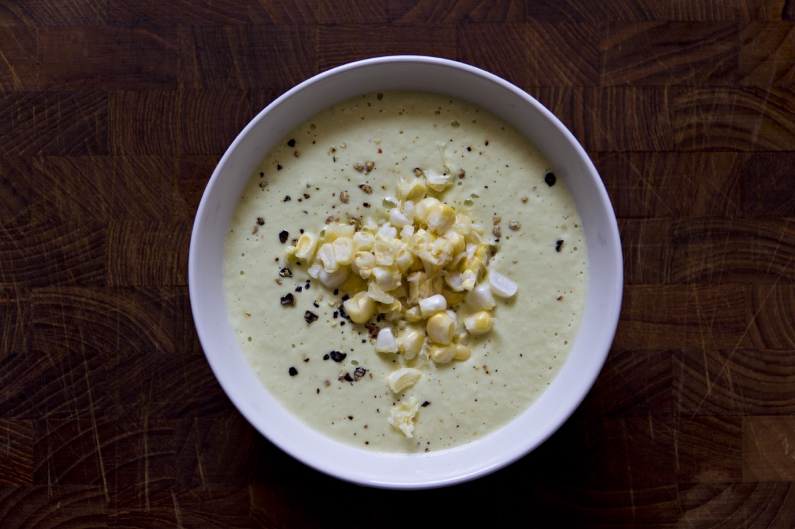
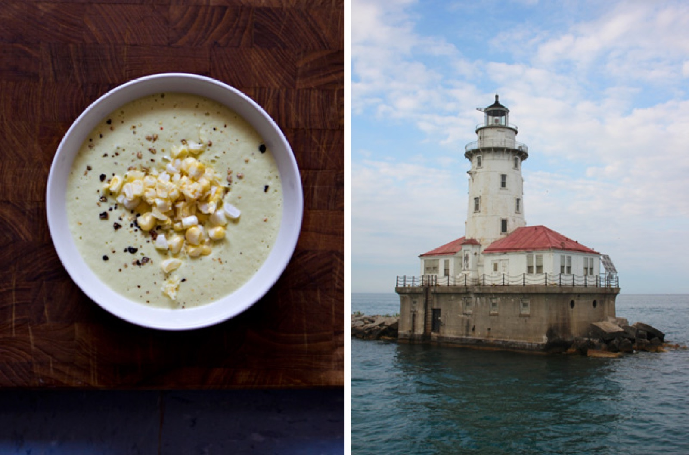

Raw Corn & Cashew Chowder

Thank you to everyone for all of your kind words after I was mugged in December. I was especially moved that a few of you even offered to contribute to a new camera fund. I'm happy to say that I was finally able to replace my camera on my own, even though I am incredibly grateful for the generous offers.
A lot has changed over the last few months. I'm happy to be back in my old neighborhood in Chicago after grad school. I love my work and my ever-growing professional network. I met excellent people at the Midwest UX conference in June and the Chicago UX Book Club has continued to be fun and thought-provoking.
I spent a lovely long weekend in the Bay Area in May and I'm heading on my annual Glacier backpacking trip with my Dad in a few weeks. The summer has been busy with six weddings and various out-of-town guests. But, I've still found the time to slow down with warm evenings on restaurant patios and a picturesque sailboat ride on Lake Michigan

In addition to my new camera, my other large purchase over the last six months was finally acquiring a fancy blender. I'd coveted a Vitamix for half a decade, but after quite a bit of research I decided on a Blendtec blender and I couldn't be happier with my choice. I have kale smoothies every morning and I've recently fallen in love with this raw summer soup.
Raw Sweet Corn, Cashew & Avocado Chowder
Ingredients
4 ears sweet corn
1/2 C raw cashews
1 avocado
1 1/2 garlic cloves
4 Tbl good olive oil
1 1/2 C water
2 tsp kosher salt
Freshly ground black pepper
Method
Husk the corn and remove the silk. In a large shallow bowl, stand the corn on an end cut off the kernals with a sharp knife. Set aside half a cup of corn kernals. Combine the remaining kernals and the rest of the ingredients in your blender, and blend until very smooth. (I used the "soup" setting on my Blendtec.) Adjust the seasoning as desired.
Pour the soup into bowls and top with the reserved corn kernals and a bit more black pepper. Serve at room temperature, or chill if preferred.